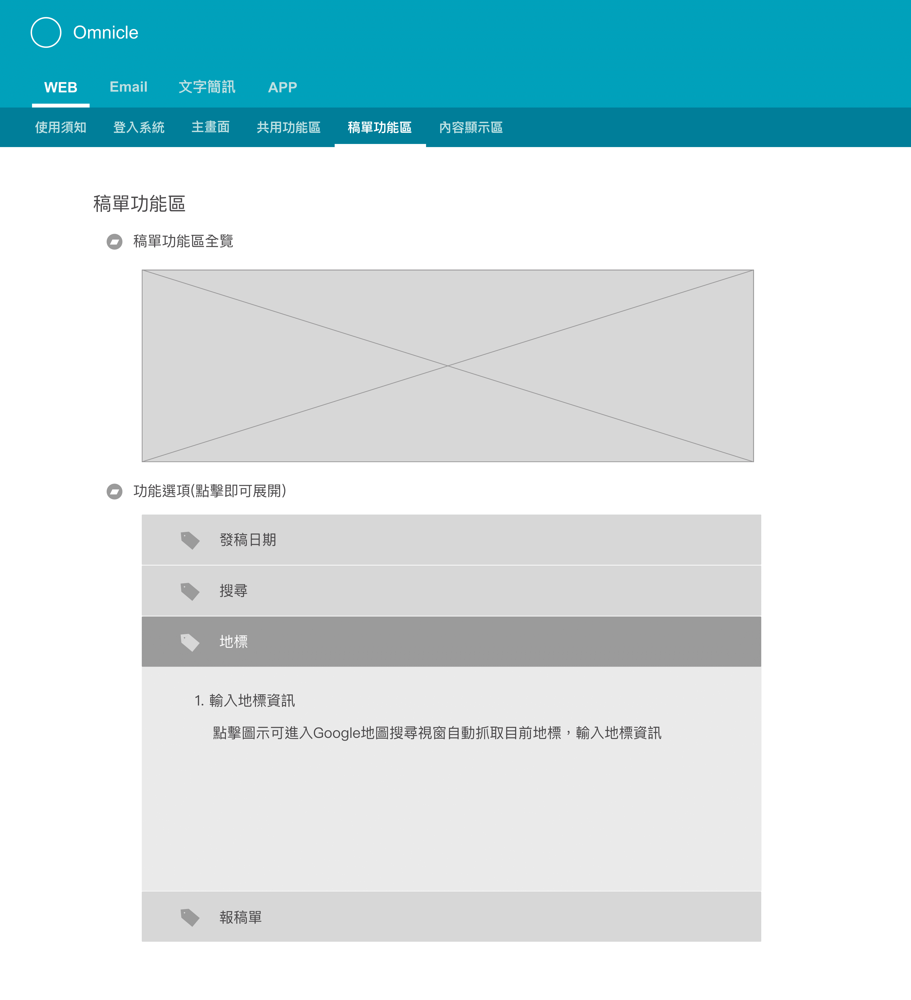
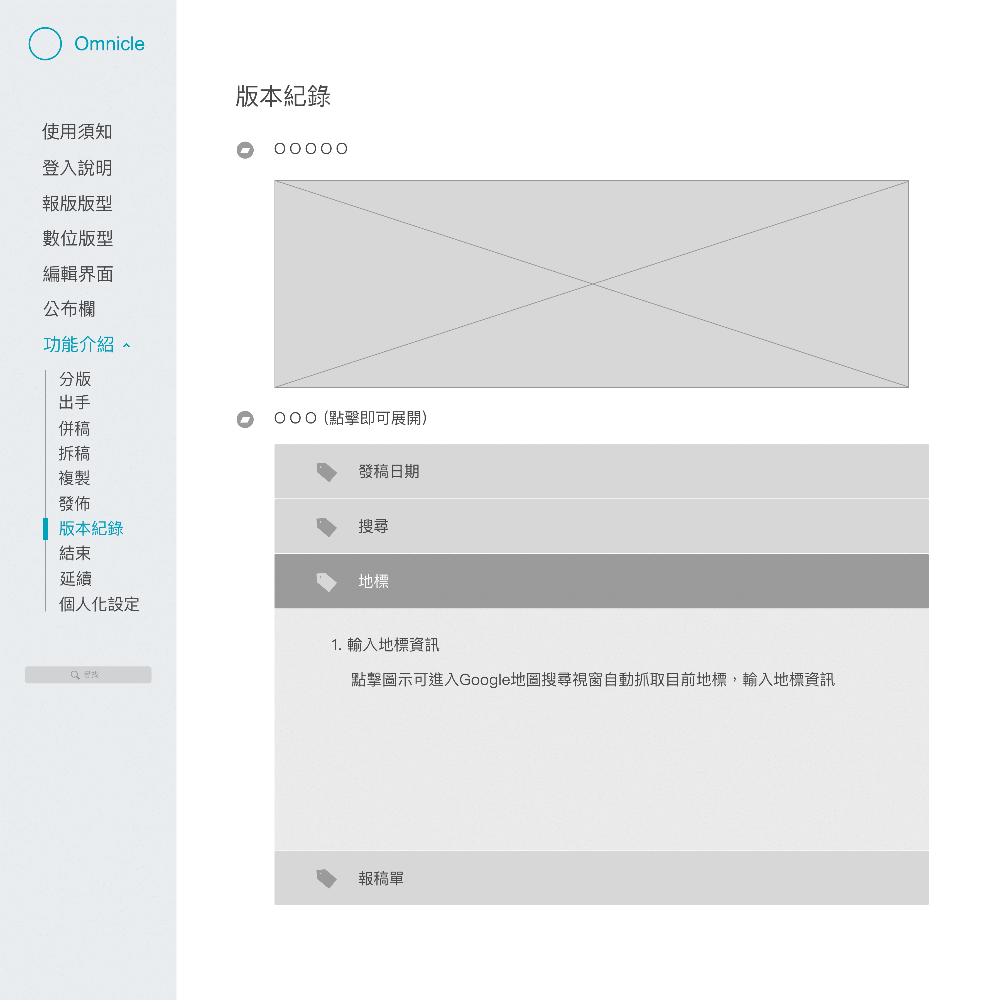
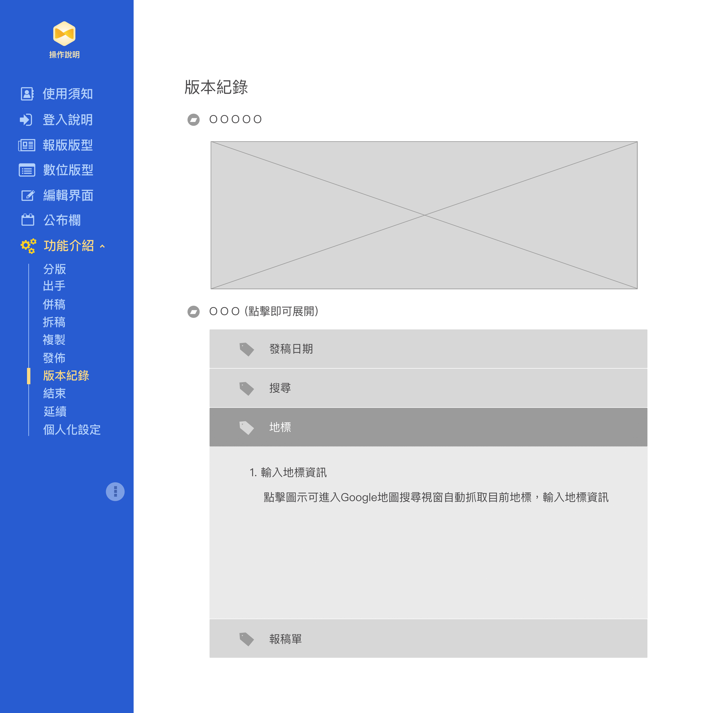

Omnicle Tutorial Website
| Column 1 | Column 2 |
|---|---|
| Project Goal | Build a documentation website to instruct users on the functions and procedures of Omnicle (the Content Management System of United Daily News) |
| Features |
|
| Column 1 | Column 2 |
|---|---|
| Collaborators | Project Manager / Project Leader |
| My Responsibilities |
|
| Column 1 | Column 2 |
|---|---|
| Design Tools |
|
| Browsers |
|
Design Process
Discovery
In the initial conception stage, I studied the tutorial website of another production system designed for reporters to produce news drafts, and used it as a guide to design Omnicle documentation.
Design
I created three mockups using Sketch for discussion purposes with the project manager and the leader. In each mockup, I used different color styles and experimented with different arrangements, such as that of the navigation bar.
-Mockups-In the end, I affixed the navigation to the left-hand side and decided to allot it ¼ of the page width, which left ¾ of the space for main content (with infinite scrolling), due to the majority of employees in UDN (and myself) using 19 inch-width screens.
I designed this arrangement for two reasons:
- The width of the text and image content should not be too wide, or it will be hard to read.
- With the fixed left navigation, the reader can easily browse through content to findwhat they want and without switching between many tabs.
In building the final website, I relied on the mockups while continuing to revise the layout of the content.
Considering that a majority of users may visit this tutorial website when they need someinstruction during their work of news production, which was usually in a rush, the goalhere was to provide the users with a clear and plain layout so that they can easily andquickly find what they are looking for.
I also added in certain interesting features. For example, I created font size buttons atthe top of the page to provide three options for content text size, allowing the reader tocustomize for comfort.
Difficulties during development
Because of the schedule, I had to build thewebsite at the same time that Omnicle’sconstruction was taking place. Frequentchanges in interface, function, or even in thesystem page design forced me to constantlyrevise and adjust to the latest system update,which inevitably resulted in much time andeffort wasted.
In the end, I learned to adjust my working orderto fit the progress of Omnicle, which made mywork more efficient.
Learnings
In creating this tutorial website, I learned the importance of having the users in mind.
When organizing the documentation content, Ifocused on the details of functions and procedures.However, the project leader also proposedincorporating examples of complete workingscenarios in paper and digital news productions, sothat the users might be more informed on how thedrafts would be handled at different stages of theprocedure. This section received positive feedbackfrom users, who found that they could easily seetheir work from a big-picture perspective.